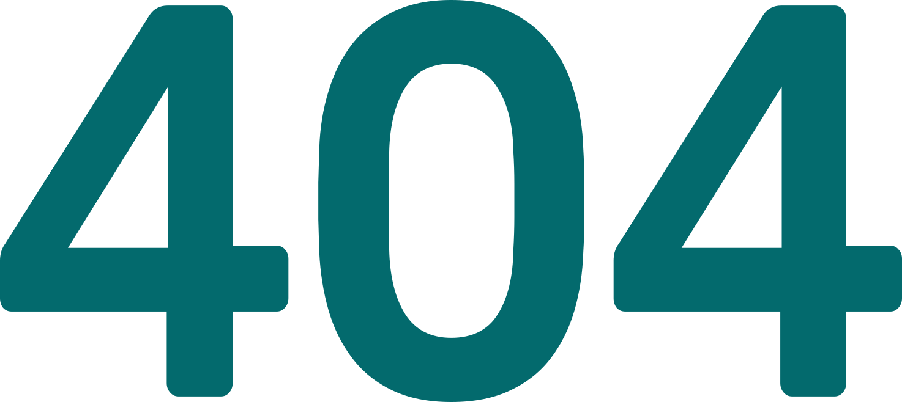
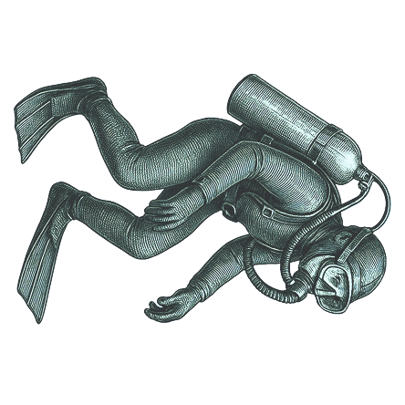

@@include('../components/head.html', { "title": "Волга Лигал - " }) @@include('../components/header.html', { "type": "fill" })

Видимо, вы потерялись :(
Запрашиваемая страница не найдена. Вернитесь на главную или повторите попытку позже
На главную
